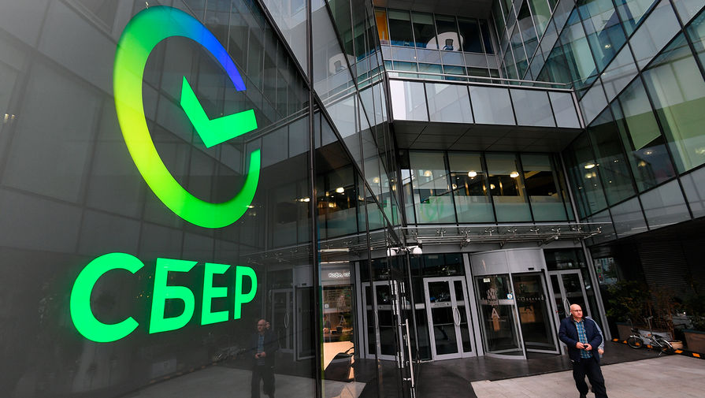

Сбербанк
крупнейший универсальный банк России и ведущая финансово-технологическая экосистема
Крупнейший банк в России, а также в Центральной и Восточной Европе. Свою историю Сбербанк ведет с 1841 года, когда император Николай I подписал указ об учреждении сберегательных касс. У банка более 110 млн активных частных клиентов и 3,5 млн активных корпоративных клиентов. Основной акционер банка — Фонд национального благосостояния, которому принадлежит 50% плюс одна акция, остальной пакет — в свободном обращении. С 2022 года Сбербанк находится под самыми жесткими санкциями США — в SDN-листе. По итогам 2025 года Сбербанк в очередной раз обновил рекорд среди российских банков по годовой чистой прибыли — она достигла 1,706 трлн рублей. Консалтинговая компания Brand Finance оценила бренд «Сбера» в $7,1 млрд. Банк предлагает весь спектр инвестиционно-банковских услуг, в ряде классических сегментов банковского бизнеса (например, на рынках депозитов и кредитования) занимает лидирующие позиции. Особое внимание «Сбер» уделяет инвестициям в искусственный интеллект — совокупные инвестиции в развитие генеративного ИИ в 2024-2026 годах составят около 600 млрд рублей.
История
- 1841–1842 годы: Создание первых сберегательных касс; первый вклад в марте 1842 года сделал Николай Кристофари (на сумму 10 рублей). Конец XIX века: Сеть касс активно разрастается по всей стране, к 1895 году насчитывая более 3875 отделений.
- 1925 год: Сеть преобразована в Государственные трудовые сберегательные кассы (Гострудсберкассы) СССР.
- 1987 год: Проведена реорганизация системы, создан специализированный Банк жилищно-социального развития и сбережений населения (Сбербанк СССР).
- 1991 год: На базе Сбербанка СССР учрежден Акционерный коммерческий Сберегательный банк Российской Федерации (Сбербанк России), дата регистрации - 22 марта 1991 года.
- 2007 год: Президентом и председателем правления банка стал Герман Греф, начался курс на модернизацию.
- 2017–2020 годы: Банк трансформируется из классической кредитной организации в крупную технологическую экосистему.
- 2020 год: Проведена масштабная ребрендинг-кампания, основной бренд сокращен до названия «Сбер», а контрольный пакет акций перешел к государству (Фонду национального благосостояния).